This week's assignment was to 3D print something I couldn't make with subtractive methods, and to scan an object using photogrammetry. I decided to print two things that would actually be useful in my daily life:
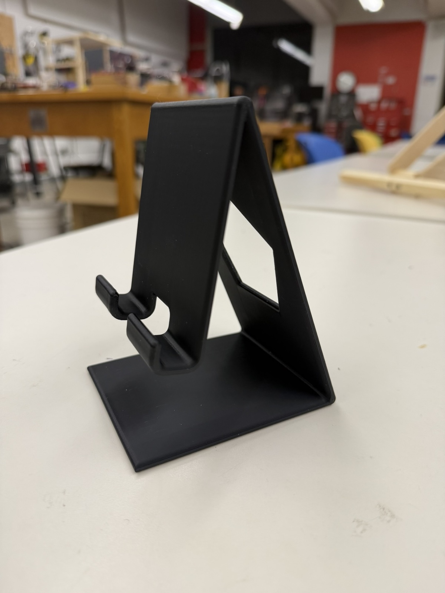
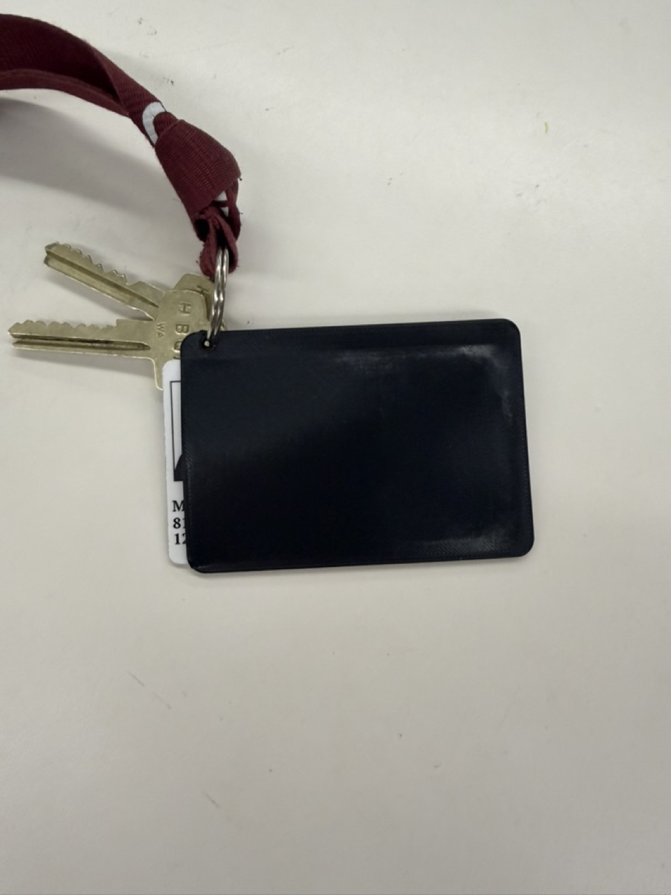
CAD'ing up an iPhone stand turned out to be a great confidence builder for my 3D printing and Fusion skills. Since this was a very custom-fit piece, I started by sketching out the dimensions and what I wanted each side to look like before touching Fusion.
The most important part of the sketch was getting the angle right. The angle between the phone holder and the support behind it had to match exactly how I sit at my desk during FaceTime calls, relative to my face and the desk height.
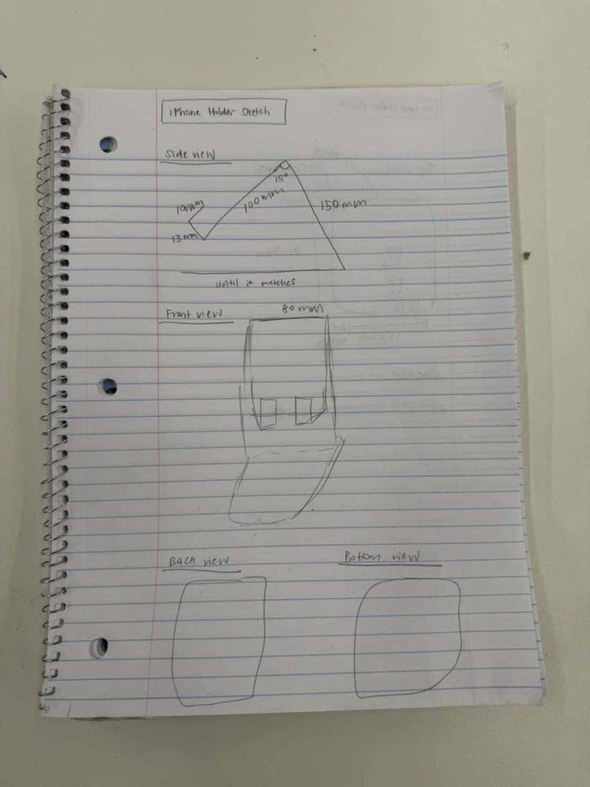
Once the sketch was right, I extruded the design and cut out a few features:
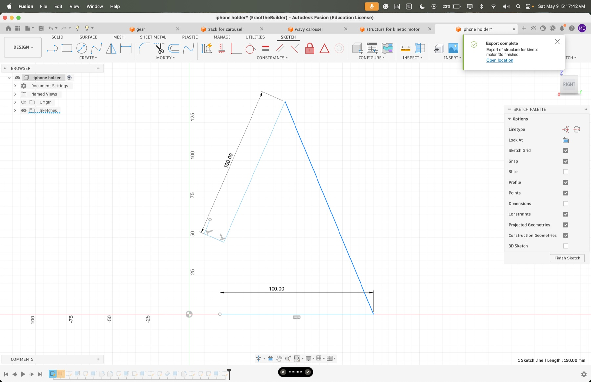
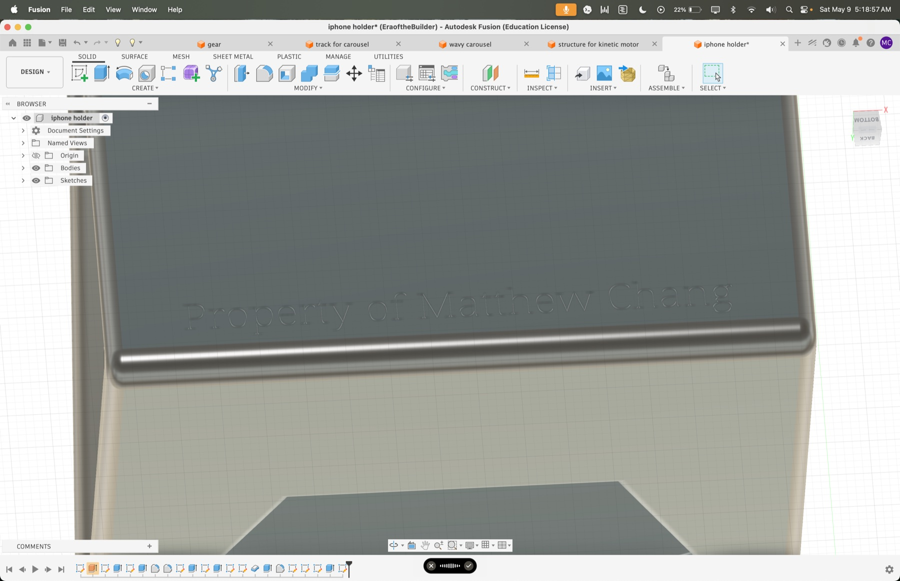
I also engraved my name on the bottom. To do the engraving, I used Text to SVG to convert letters into an SVG that I imported into Fusion.
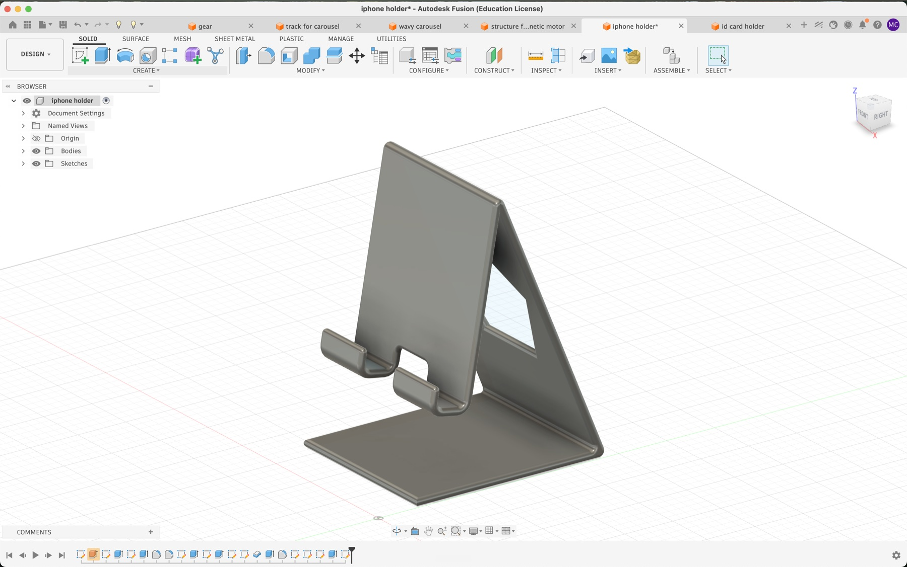
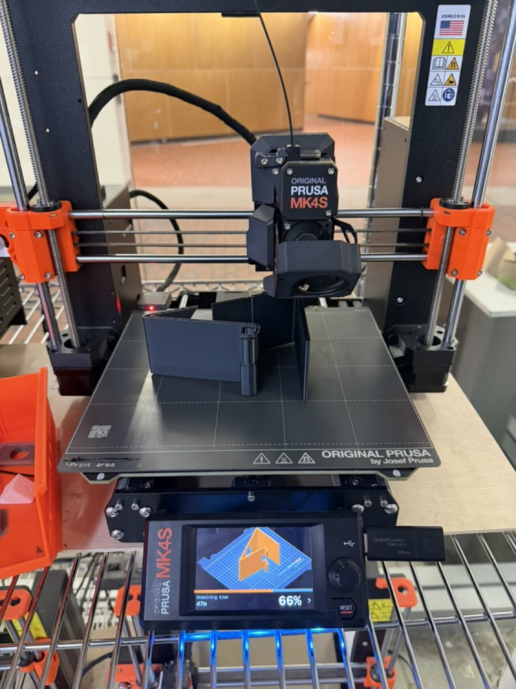
This one took many more iterations than the iPhone stand. The dimensions were trickier and I had a couple of mishaps with the supports. I eventually had to switch from organic supports to a normal grid support so I could actually peel them off cleanly.
Like the first project, I started by sketching the top and side views. Two dimensions mattered most:
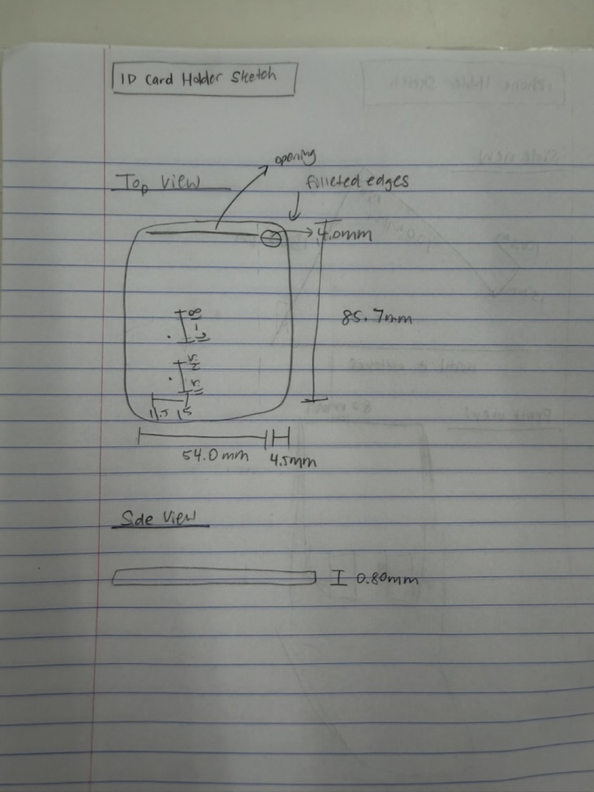
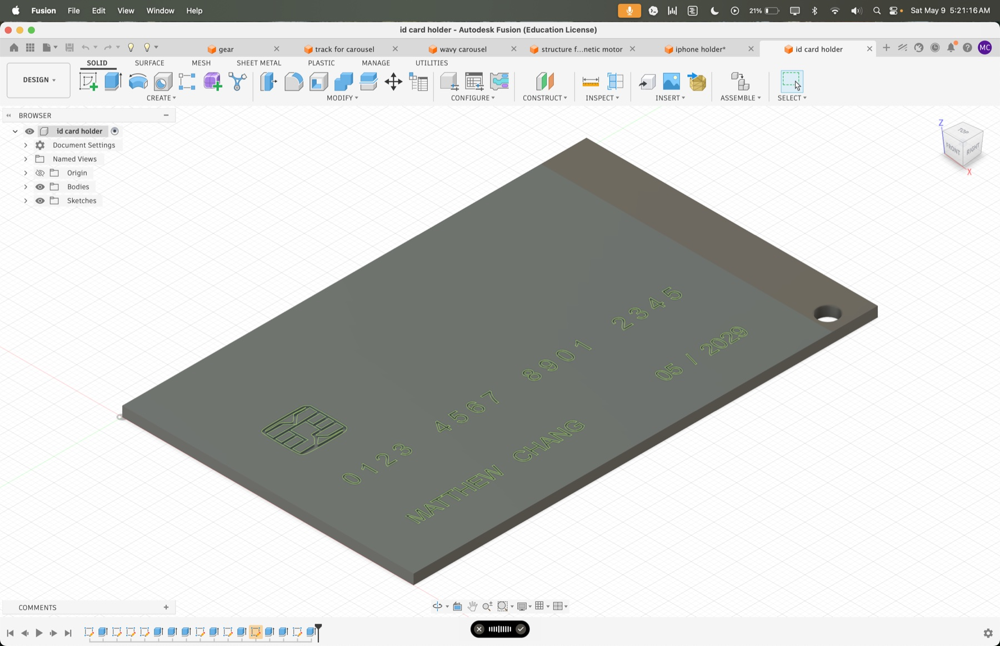
For fun, I decided to make the holder look like a credit card by adding engravings on the front for my name and a credit card chip design. I used Text to SVG again for the name, and picsvg.com to convert a credit card chip image into an SVG I could import into Fusion as an extrusion cut.
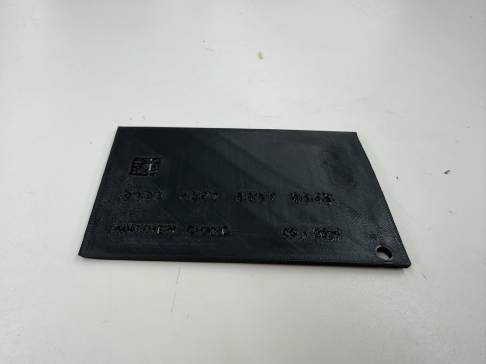
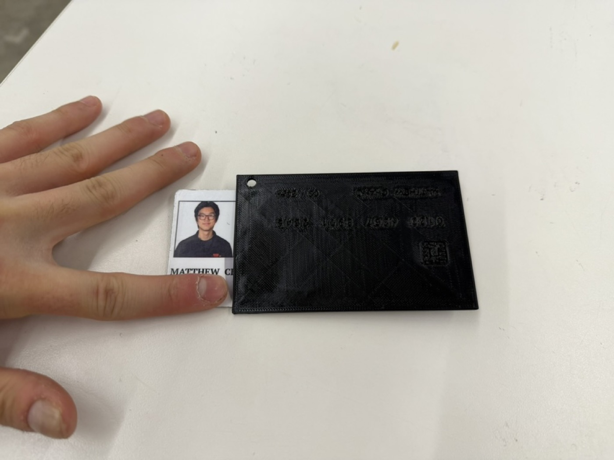
Looking at the final print, the Prusa didn't quite have the resolution to do the fine text justice, but it was still cool to try and the overall design came out clean. The keycard fits snugly and the keychain loop works perfectly.
I had a lot of fun with the photogrammetry portion of this assignment. I was genuinely shocked at how well RevoScan could reconstruct a 3D model just from a bunch of 2D photos. It still seems to me like it's out of a Mission Impossible movie.
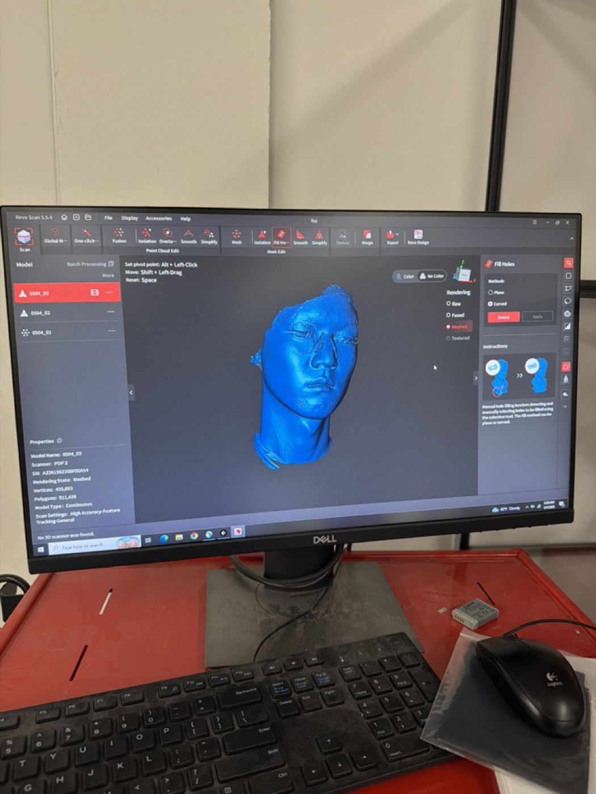
Scan 1: My face. This was harder than I expected because I have black hair, and the scanner doesn't pick up dark surfaces well since there is not a lot of light reflecting back. The hair came out rough, but I got a nice clean scan of my face and neck. I couldn't embed the STL of my face because the file was too large, and viewstl.com has a maximum file size of 30 MB.
Scan 2: The Greek/Roman bust. I looked around the PS70 lab for objects that would be hard to recreate in Fusion the normal way, and found a bust of a Greek or Roman man sitting around. I did a trial scan on him and used the mesh isolation and fusion tools in RevoScan to clean up the extraneous parts of the scan I didn't want.
Scan 3: An SD card holder. I picked this one because it has a lot of small details that I thought would be tedious to model in CAD. The scan actually did a great job capturing the details, which I thought was impressive given how small the features are.
For my final project, I'm going to build a radio, which is something I've always wanted to make. The plan is to start with an MVP that's purely an internet radio, using Wi-Fi and some streaming API, and then expand outward from there. Eventually I want it to support real FM radio waves, Bluetooth audio, and MP3 playback from files stored on an SD card inside the radio itself.
Here are the 3D models for the radio enclosure that I have right now. Eventually, I will need to have a larger enclosure, but this should suffice for the MVP.
Electronics
Power
Before spring break: Finish the MVP, including a 3D printed enclosure for the radio, with the OLED and speaker connected and an internet radio playing through the ESP32.
By April 15: Order the FM chip and finalize all the physical components and the enclosure design, including where the buttons go, where the rechargeable battery sits, where the USB-C port is, and where the knobs are.
By end of April: Design the PCB and mill a version of it on the PCB milling machine. The board should bring together the ESP32, FM chip, SD card module, and audio path so the internals aren't a rat's nest of wires.
May: Use the remaining time for testing and any refinements the radio needs.